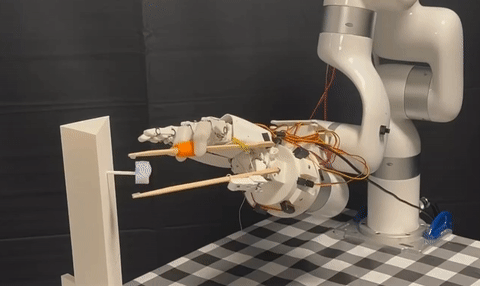

|
Changwei Jing I am a second-year M.S. student in ECE at UC San Diego, working with Prof. Xiaolong Wang. Previously, I received my B.S. in Physics from Shanghai Jiao Tong University. I am broadly interested in robotics, with a focus on dexterous manipulation, driven by the goal of enabling robotic hands to physically perform complex tasks. |

|
Research |
|
Contact-Aware Neural Dynamics
Changwei Jing, Jai Krishna Bandi, Jianglong Ye, Yan Duan, Pieter Abbeel, Xiaolong Wang†, Sha Yi† Preprint paper / website |
|

|
Switchable Neural Teleoperation
Jianglong Ye*, Changwei Jing*, Kezhou Chen, Keyi Wang, Sha Yi, Xueyan Zou, Xiaolong Wang Preprint paper / video |
|  |
A Study of Dexterous Hand Degrees-of-Freedom for Teleoperation and Imitation Learning
Kezhou Chen*, Changwei Jing*, Chengzhe Jia, Ge Yang, Sha Yi, Xiaolong Wang Preprint, 2025 |

|
From Power to Precision: Learning Fine-grained Dexterity for Multi-fingered Robotic Hands
Jianglong Ye*, Lai Wei*, Guangqi Jiang, Changwei Jing, Xueyan Zou Xiaolong Wang arXiv preprint (arXiv), 2025 arXiv / video / website / twitter |
|
|